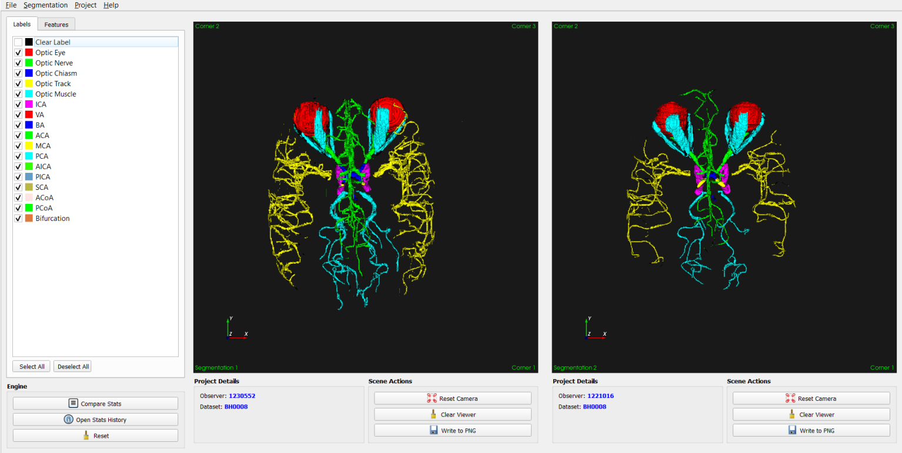
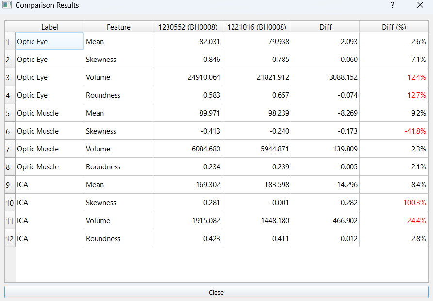

Main Interface: Synchronized TOF-MRA 3D Rendering
Project Overview
This project features a Python-based GUI developed to combat the subjectivity and inter-observer variability in manual medical image segmentation. It utilizes the Insight Toolkit (ITK) for data processing and VTK for high-performance 3D visualization.
Clinical Validation Engine
Volume Difference
24.4%
HIGH SUBJECTIVITY
Roundness Diff
2.8%
CONSISTENT

Discrepancy detection in anatomical structures like the Internal Carotid Artery.
Synchronized Viewing
Camera parameters are mirrored across observers to ensure identical anatomical viewpoints during inspection.
Technical Stack
Processing DICOM data through simple ITK filters for geometric feature extraction.
Session Export
Integrates a session history module for exporting clinical data in .DAT format for statistical analysis.